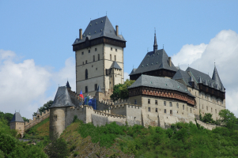
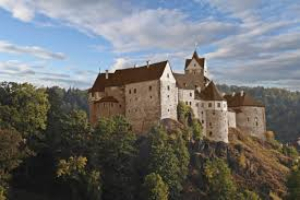
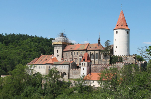
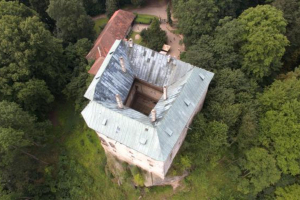
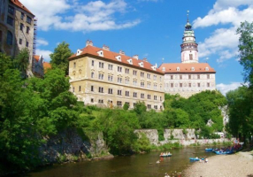
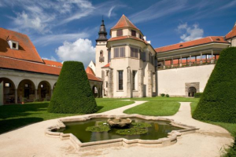
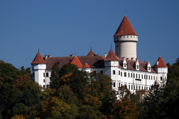
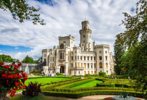

Kvíz
Odkazy
Nejnavštěvovanější hrady
Karlštejn
Hrad Karlštejn byl založený v roce 1348 a zaujímá mezi českými hrady zcela výjimečné postavení.
Byl vybudován českým králem a římským císařem Karlem IV. jako místo pro uložení královských pokladů, především sbírek svatých relikvií a říšských korunovačních klenotů.
Loket
Loket je románský hrad s expozicí stavebního vývoje hradu, muzeem historického porcelánu a historických zbraní.
Goticko-románský hrad Loket byl založen v první polovině 13. století. Na jeho místě se nacházelo staré slovanské hradiště zvané starý Loket.
Křivoklát
Hrad Křivoklát je jedním z nejvýznamnějších hradů českých králů. Původně byl hrad loveckým sídlem, na jeho podobě se podíleli postupně Přemyslovci, Lucemburkové i Jagellonci. Svou dnešní podobu hrad získal díky přestavbě po požáru v 18. století, kdy jej vlastnil rod Fürstenbergů.
Hrad byl rezidencí panovníků a později i vězením, kde pobýval například i alchymista Edward Kelly.
Houska
Houska je renesančně přestavěný raně gotický hrad, který leží ve východní části Kokořínských lesů, 47 km severně od Prahy, v katastrálním území Houska obce Blatce. Nechal jej vystavět Přemysl Otakar II. jako významný královský hrad, ale záhy přešel do šlechtického majetku, v němž zůstal až do roku 1924.
Nejnavštěvovanější zámky
Český Krumlov
Státní hrad a zámek Český Krumlov patří nejen svou rozlohou, ale také architektonickou úrovní a kulturní tradicí mezi nejvýznamnější památky středoevropské oblasti.
Po Pražském hradě je druhým největším zámeckým a hradním komplexem v Čechách. Zámek spolu s věží tvoří dominantu města, tyčící se na skalním ostrohu, nad meandrem Vltavy.
Telč
Telčský zámek patří mezi klenoty moravské renesační architektury.
Jeho přitažlivost je tím větší, že se zde díky citlivému přístupu majitelů k dědictví minulosti zachovaly ve velmi dobrém stavu původní interiéry. Mnoho z nich jsou reprezentativními příklady zásahu italského umění do našeho území, případně jeho proměn v prostředí severně od Alp.
Konopiště
Konopiště založil nedaleko svého rodového sídla Benešova kolem roku 1294 pravděpodobně pražský biskup Tobiáš z Benešova a to podle vzoru francouzských pevností.
Hluboká nad Vltavou
Na místě raně gotické tvrze z druhé poloviny 13. století dnes stojí gotický zámek, jejž vybudoval koncem 15. století Vilém z Pernštejna.
Ve třicátých letech 19. století se rozhodl kníže Jan Adolf II[2]. Hlubokou od základu strhnout a vybudovat nový zámek v romantickém stylu. Projekt vypracoval architekt Franz Beer, jenž také od roku 1840 po dvacet let sám vedl stavební práce. Nové budovy, které stojí dodnes, byly postaveny ve stylu tudorovské gotiky podle vzoru anglického královského zámku Windsor. Náročné exteriéry a interiéry byly dokončeny až v roce 1871 pod vedením Damasia Deworezkého. Zámek je obklopen anglickým parkem se sochařskou výzdobou.